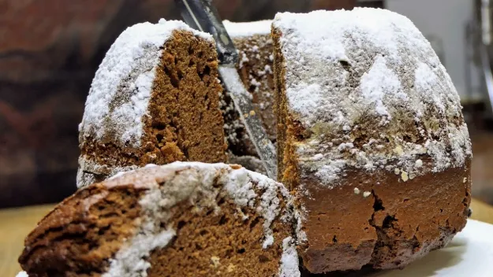

Вкусен Кекс

За тази рецепта
Много обичам кекс. Кой не обича!? Този вкусен кекс е перфектен - както за закуска, придружен с айрян,
така и за следобедна хапванка с чаша топъл чай. Пръстите да си оближе човек.
Честно казано, никога не съм правил кекс, но за сметка на това жена ми е факир и ще споделя нейната рецепта!
Съставки
- яйца - 4 броя
- брашно - 2 чаени чаши
- олио - 1/2 чаена чаша
- какао - 1 супена лъжица
- бакпулвер - 2 чаени лъжици
- кисело мляко - 200 грама
- захар - 1 чаена чаша
- ванилия - 1 брой
- сода за хляб - 1 чаена лъжица
- пудра захар - 2 супени лъжици
Приготвяне
-
Първата стъпка от рецептата за лесен кекс е подготовката на течната смес. Разбивате много добре захарта
с яйцата с миксер или тел за разбиване, след това добавяте киселото мляко, в което сте разбъркали содата
и отново разбърквате. Добавяте олиотои ванилията и отново разбърквате.
-
Пресявате брашното заедно с бакпулвера и малко по малко, при непрекъснато разбиване го добавяте към течната смес
и разбивате до получаване на гладна смес. Намазвате формата за кекс с олио и изсипвате сместа, като оставате 1 кафена чаша от нея,
в която добавяте какаото, за да я оцветите. Изсипете какаовата смес равномерно върху ваниловата.
-
Печете кекса в предварително загрята на 180 градуса фурна за около 40 минути, като проверявате дали е изпечен
като го бучнете с клечка за зъби - ако излезе суха лесният кекс е готов. След като изстине поръсвате кекса с пудра захар.
-
Режете, ядете, ревете и благодарите на божествата на кекса, че са ви благословили с толкова прекрасно неземно преживяване.